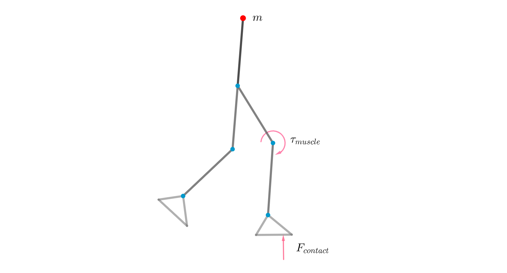
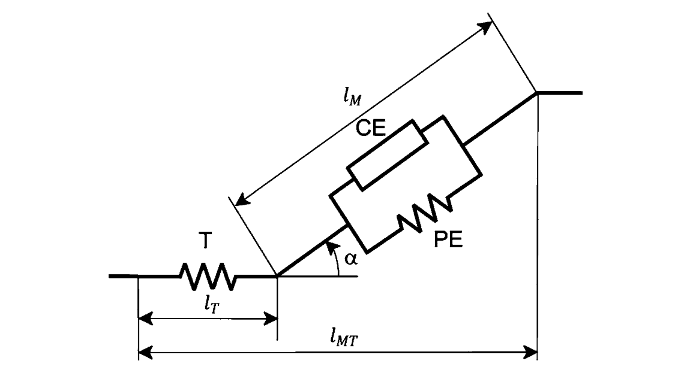
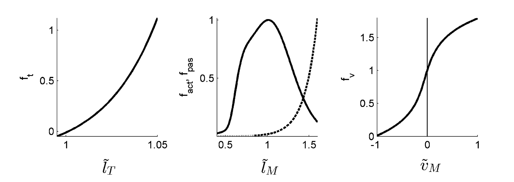
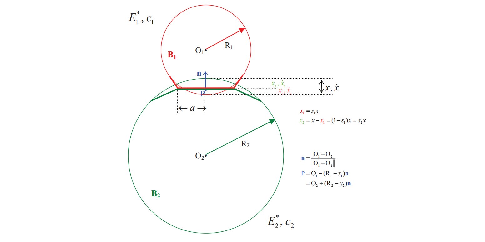
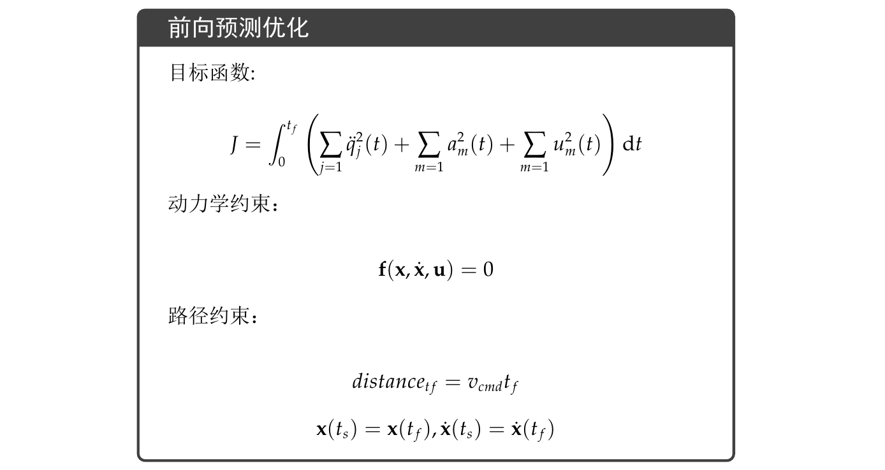
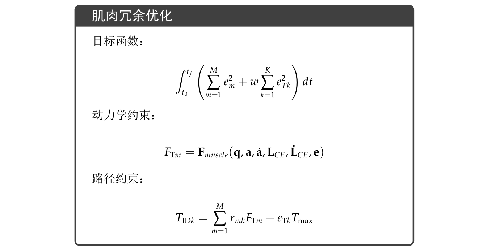

肌肉骨骼模型
骨骼的刚体动力学模型

首先基于刚体动力学对于人体骨骼系统进行建模。首先确定系统的广义坐标$q$，对于图中所示的二维模型为例，广义坐标包含躯干的水平、数值方向位移和姿态角，以及每条腿三个关节角，一共$3+2*3=9$个自由度。之后通过这些广义变量和广义变量的导数，表示出系统的动能和势能，并构造拉格朗日函数：
$$L=T-V$$
考虑骨骼系统仅收到地反力和肌肉力的作用，通过拉格朗日方程得到系统的动力学模型：
$$\frac{\mathrm{d}}{\mathrm{d} t}\left(\frac{\partial L}{\partial \dot{q}{j}}\right)-\frac{\partial L}{\partial q{j}}=\tau^{j}{contact}+\tau^{j}{muscle}$$
$$\mathbf{M}(\mathbf{q}) \cdot \ddot{\mathbf{q}}+\mathbf{B}(\mathbf{q}, \dot{\mathbf{q}})=\mathbf{J(q)}^T\mathbf{F}{contact}+\mathbf{R(q)}\mathbf{F}{muscle}$$
其中$\mathbf{M(q)}$为质量矩阵，$\mathbf{B}(\mathbf{q}, \dot{\mathbf{q}})$包含重力、离心力和科氏力，$\mathbf{J(q)}$表示雅克比矩阵，将地反力转化为对每个广义坐标的等效力矩，$\mathbf{R(q)}$表示肌肉力对广义坐标的等效力矩。下面我们主要讨论等式右侧的肌肉力与地反力。
肌肉动力学
肌肉激活动力学
尽管各个文献里的描述不尽一致，但一般来说excitation用来描述神经信号，是肌肉的控制输入（整流滤波归一化的EMG信号就是这个），而activation用来表示肌肉的活跃度，是肌肉的内部状态。在静态状态下，这两者可能相等，但在动态变化中，两者一般不同，存在由excitation到activation动态过程，即肌肉激活动力学。各方学者建立了不同的激活动力学模型，一般包含一个微分方程和一些非线性变换，其中Winters开发的一种激活动力学如下：
$$
f=0.5 \tanh (b(e-a))
$$
$$
\frac{d a}{d t}=\left\frac{1}{\tau_{a}(0.5+1.5 a)}(f+0.5)+\frac{0.5+1.5 a}{\tau_{d}}(-f+0.5)\right
$$
肌肉收缩动力学

肌肉收缩的特性可以用如上的Hill肌肉模型来描述，它由肌肉收缩单元CE与被动弹性单元PE并联，并与一个肌腱弹性单元T串联，肌肉与肌腱之间还存在一个角度成为羽状角。由于根据上面的模型，肌肉实际产生的力不仅受到收缩单元CE的激活度的影响，还受到肌肉的长度、收缩速度的影响。由肌肉纤维产生的力具有如下关系：
$$\begin{aligned}
F^{\mathrm{mt}}(t) &=F^{\mathrm{t}} \
&=F^{\max }\left[a(t)f(l) f(v) +f_{\mathrm{p}}(l)\right] \cos (\phi(t))
\end{aligned}$$
$F^{\max }$表示最大等长收缩力，$f(l),f(v),f(p)$分别表示力-长度、力-速度、被动力-长度的关系。这些函数由下图所示的实验曲线所描述，一般可以通过多项式函数拟合来近似表示。

注意到上式公式中，实际输入为激活度$a$、归一化肌肉长度$l$、和归一化收缩速度$v$，而肌肉长度与收缩速度之间存在关系，收缩动力学的状态量仅有$a$和$l$，且上述方程描述的是一个微分方程。我们将整个肌肉动力学表示为如下形式，但这种表示并不严谨，实际上每块肌肉包含着两个微分方程：
$$\mathbf{F}{muscle} = \mathbf{F}{muscle}(\mathbf{q},\mathbf{a} , \mathbf{\dot a},\mathbf{L}{CE},\mathbf{\dot L}{CE},\mathbf{e})$$
地反力模型
OpenSim中采用Hunt-Crossley模型来表示接触力，接触力由刚度项、阻尼项和摩擦项组合而成，其表达式为：
$$\mathbf{f}{\text {contact}}=\mathbf{f}{\text {stiffness}}+\mathbf{f}{\text {dissipation}}+\mathbf{f}{\text {friction}}$$

接触力模型中的第一项表示弹性力。如上图所示，我们可以用两个弹性小球来描述接触，当小球接触时会发生弹性变形，变形的程度与各自的弹性模量$E$有关，总的变形为$x$。当变形发生时，每个小球都会受到一个弹性力：
$$f_{\text {stiffness}}=f_{H z}=\left(\frac{4}{3} \sigma R^{1 / 2} E^{*}\right) x^{3 / 2}$$
$R$表示合成相对曲率，$E^*$表示合成弹性模量，它们都可以通过两个小球的参数计算出来；$\sigma$表示偏心系数，当$\sigma=1$的时候为圆接触，$x$为总的变形量。
接触力模型中的第二项表示损耗力，或是阻尼力。碰撞的发生往往伴随着能量的损耗，单纯的弹性力无法表示这一点，因此引入Hunt-Crossley耗散力：
$$f_{dissipation}=\frac{3}{2} f_{stiffness} c^{*} \dot{x}$$
$c^{*}$表示等效耗散系数，而$\dot{x}$表现出耗散力的阻尼特性。刚度力和耗散力都垂直接触面。
$$f_{\text {normal}}=f_{\text {stiffness}}+f_{\text {dissipation}}$$
接触力模型中的最后一项表示摩擦力，方向平行接触面：
$$f_{\text {friction}}=\mu(v) f_{\text {normal}}$$
$\mu(v)$表示等效摩擦因数，是关于相对运动速度的函数。
在使用上述的Hunt-Crossley模型来计算地反力时，地面的刚度认为无穷大，则相对弹性变形$x$可以通过接触小球圆心相对地面的距离计算得到，即：
$$\mathbf{F}{contact} = \mathbf{F}{contact}(\mathbf{q}, \dot{\mathbf{q}})$$
综合模型
综上所述，肌骨模型的动力学可以统一表示为：
$$\mathbf{M}(\mathbf{q}) \cdot \ddot{\mathbf{q}}+\mathbf{B}(\mathbf{q}, \dot{\mathbf{q}})=\mathbf{J(q)}^T \mathbf{F}{contact}(\mathbf{q}, \dot{\mathbf{q}})+\mathbf{R(q)}\mathbf{F}{muscle}(\mathbf{q},\mathbf{a} , \mathbf{\dot a},\mathbf{L}{CE},\mathbf{\dot L}{CE},\mathbf{e})$$
定义状态变量：
$$\mathbf{x}=\left(\mathbf{q}, \dot{\mathbf{q}}, \mathbf{L}_{C E}, \mathbf{a}\right)^{T}$$
在定义$u$为16块肌肉的控制量（excitations），上面的动力学方程可表示为：
$$\mathbf{f}(\mathbf{x}, \dot{\mathbf{x}}, \mathbf{u})=0$$
肌骨模型的仿真应用
前向仿真

逆向分析
逆向分析是指，在已有运动学、地反力数据后，根据实验数据推断出产生相应运动的肌肉活动，也就是OpenSim中的CMC。由于肌肉之间存在和比较严重的耦合问题，多块肌肉连接同一个关节，同一块肌肉连接着不同关节，因此逆向分析最重要的是解决肌肉冗余 - Solving the Muscle Redundancy Problem。
在这个问题中，已有运动学数据$\mathbf{q}k$和地反力$\mathbf{F}{\mathbf{C}k}$序列，$k=1, \ldots, K$表示离散时间。我们先计算逆动力学得到关节力矩$T_{\mathbf{ID}k}$，关节力矩应当等于有肌肉收缩的等效力矩：
$$T_{\mathrm{ID} k}=\sum_{m=1}^{M} r_{m k} F_{\mathrm{T} m}+e_{\mathrm{T} k} T_{\mathrm{max}}$$
$m$表示肌肉序号，$r$表示肌肉对关节等效力矩。有时候关节力矩和肌肉里橘无法严格相等，因此我们添加了公式中的最后一项来表示力矩的残差，而$e_{\mathrm{T} k}$表示残差系数，在后面我们会设计优化目标是残差力尽可能的小。
由此建立逆向分析的优化框架：
